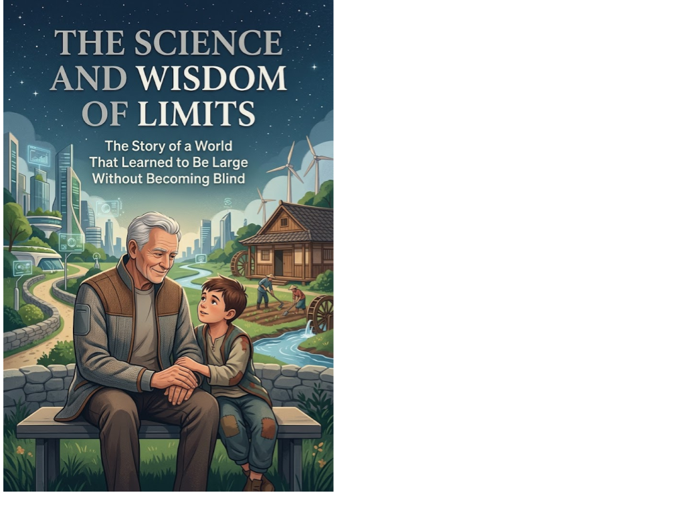

Science Fiction Literature · Axiologic Research Editions
The Science and Wisdom of Limits
The Story of a World That Learned to Be Large Without Becoming Blind
Follow twelve-year-old Matei through archives, cooperatives, civic models, and a city preparing for a solar storm. His deceptively simple school assignment opens a harder question: when nobody can comprehend the whole world, how can people still govern its connections, challenge its decisions, and survive its failures?
The art of seams
This future story refuses two false solutions: shrinking every problem to a village and placing the planet beneath one intelligence. Its world has grown beyond any single point of view, so it must learn to coordinate through seams, places where systems meet, explain themselves and can be repaired.
Matei’s assignment moves through distributed decision-making, cities that detach, machine assistance and a “mind made of disagreements.” The scientific note grounds the fiction in research on bounded rationality, polycentric governance, collective intelligence and planetary limits.
Large, but not blind
Who decides when no one can see the whole? The book explores institutions that distribute judgment rather than hiding it behind a central decider.
What can machines do well? They can help people see relationships too complex for unaided attention, without acquiring the right to settle every conflict.
What is a limit for? Not retreat, but a condition of legibility, accountability and cooperative scale.
A world can become large without becoming blind when its seams remain visible and repairable.